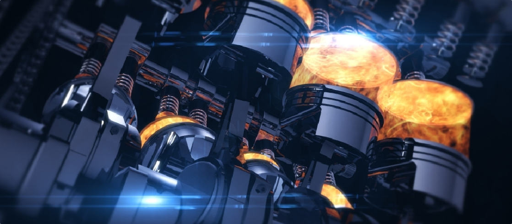
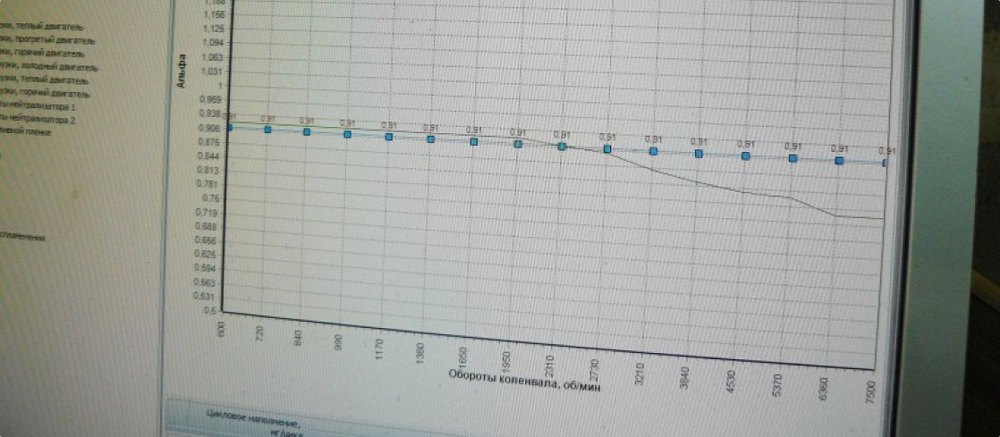

В этот раз фотографий почти не будет. Предыстория такова - в 2011-2012 годах довелось недолго поработать с одним чиповщиком, который делал нам программы на собранных в Мастерской K-POWER двигателях.
Человек известный, выступает в автогонках, ездит на соревнования, занимает места. Поначалу всё было неплохо - отшитые им моторы ехали напористо и задорно, вот только детонация брякала периодически. Да и не чиповал он машинёшки онлайн - "профи не ошибается". Не буду называть имён и тыкать пальцами, дело прошлое, да и разборки с персоналиями не интересны (для себя уже всё выяснено).
Но последствия его "чиповки" аукались несколько лет - машины зимой переставали заводится, водителей доставала детонация, хотя на расход никто не жаловался.
В мае к нам обратился постоянный клиент, которому в 2011 году делали тюнинг 8-ми клапанного двигателя на Самаре (доработали головку, блок не трогали по просьбе клиента, т.е. маслофорсунки не врезали). Т.к. он иногородний, то наблюдать его машину не было возможности. Как он рассказал, пробег авто составил 60 тыс.км после доработок, блок два раза точили в рем.размер - оба раза поршни плавились и задирали цилиндры. И вот, он хотел бы приехать к нам на капремонт - мотор стучит и жрёт масло вновь. Поначалу погрешили на отсутствие маслофорсунок, на программу особых сомнений не было.
Рассказывать про мотор долго нет смысла - поршни представляли из себя оплавленные куски алюминия с переломанными кольцами (похожие вот на это), цилиндры задраны. Блок расточили под 84.0 мм поршни (получился объем 1.67 литра), врезали маслофорсунки, поставили сварной ресивер.
Далее машину отправили другому чиповщику, с которым сотрудничаем многие годы, и нареканий на его работу не было никогда (в частности он сделал программы на наши инжекторные Окушки). На данной Самаре установлен мозг М73. По мнению чиповщика - один из "гемморойных" блоков, он с ним долго разбирался, и его нельзя прошивать на коленке, только катать онлайн, т.е. смотреть результаты по топливу и углам.
Открыли программу и ошалели, мягко говоря. Наш великий спортсмен не утруждался разбором функционала контроллера М73, а лишь произвёл несколько странных правок и весьма кривое отключение лямбды. Так же он влез туда, куда не стоило. Результатом этого колхозного чип-тюнинга в 2011 году стало следующее:
1) Машина работала на экстремально низких углах зажигания - "чиповатор" ошибся с калибровками и внёс правки не туда, куда следовало. В итоге на мощностных режимах углы снижались на более чем десяток градусов. Итог? Смесь горит поздно, сжигая сёдла (нам пришлось заменить выпускные сёдла, т.к. они сильно просели, как будто машина ездила на газовом топливе с поздними углами).
2) Обнаружили бедную смесь на высоких оборотах в мощностном режиме! Тут вообще "финиш" и "детский сад" в одном флаконе. Вместо нормальной смеси мотор получал обедненную, температура в камере доходила до 1000 градусов, вот и плавились поршни и горели сёдла.
3) Большое количество некорретных калибровок, в т.ч. и по форсункам (в программе прописаны более производительные форсунки, чем были установлены на машине по факту).
В сумме основные и дополнительные калибровки давали забеднение смеси, которое и было выявлено при диагностике, а в дальнейшем - при разборе программы.
Вот фото сравнения графика смеси (открывается в новом окне при клике на картинку) в режиме "больших нагрузок на горячем двигателе" (у контроллера М73 несколько калибровочных таблиц смеси для разных режимов).
Зеленая линия - заводская программа. После 2700-3000 об начинается обогащение смеси (кривая провисает). Синим же пунктиром показан график состава смеси, прописанный при "чип-тюнинге". Кривая была выровняна...
И таких "приколов" в этой программе - масса. Вот так чипует машины ОЧЕНЬ известный человек в нашем регионе.
В результате программу полностью переделали, заново отписали и прокатали онлайн. Машина уехала в Башкирию, человек доволен. Теперь, когда состав смеси не будет бедным, а углы зажигания доведены и отписаны под башкирский бензин, смесь будет гореть правильно. Она не будет обеднятся и сжигать выпускные сёдла. Т.е. проблем с мотором больше не будет.
Этой статьей хотелось бы показать важность чип-тюнинга, когда развалить даже правильно собранный двигатель - проще пареной репы, вот из-за таких остолопов с загнутым в небеса самомнением своей собственной непогрешимости. Когда человек лезет в программу, вообще не понимая, что он там калибрует, результат плачевен - смерть мотору.
Вдогонку хотелось бы разобрать еще один пример. Нередко приезжают люди и заявляют - "у меня чип-тюнинг сделан, нужно только отремонтировать двигатель". Но позвольте - кем сделан? Как? Купить программу и переходник сейчас не проблема, а вот понимание что и как сделать - не продаётся. Ладно бы просто откапиталить мотор, но тюнинг уже подразумевает отписку программы.
Был случай в начале 2014 года - приезжает владелец свежей Шевроле-Нивы, по рекомендации старых клиентов. Пробег 30 тыс.км, в лесу по-пьяни дурковали, перегрели двигатель, после чего пробило прокладку ГБЦ, мотор стал кушать масло. Стоит ГБО (пропан-бутан), 4-е поколение, форсуночный газ, оборудование BRC. Водитель сходу заявляет, что программу ему делали очень известные люди, нужен капремонт двигателя и некоторый тюнинг. Хорошо. Перегретый мотор списали на "дуркование в лесу", сделали ремонт с расточкой блока цилиндров и установкой маслофорсунок, доработали головку блока цилиндров, распредвал оставили серийный.
Клиент уехал и вскоре начались тревожные звонки. После пробега в 7 тыс.км мотор снова начал жрать масло. Причем расход - до литра на 500 км. Клиент звонил и рассказывал о плохом ремонте, о литрах запасного масла в багажнике. Т.к. на ремонт была дана гарантия, пришлось снова разбирать двигатель. Недовольный клиент поведал о расстроенных чувствах, о том, что он приехал по рекомендации и не получил того, чего ожидал, что двигатель тухлый, не тянет, отсутствует динамика.
Головка блока оказалась в идеале (как и ожидалось), а вот поршневые кольца полностью потеряли упругость. И это при том, что цилиндры (хон) были в идеале, как будто мотор вчера собрали. Поменяли поршни и кольца, и буквально силком заставили клиента обратится к чиповщику, с которым мы работаем. И что вы думаете? Изменений известными чиповщиками в заводской программе (помимо выключенной лямбды) - НОЛЬ. Притом, что версия программы попалась с отсутствующим мощностным режимом (такая вот приколюха от "дважды автомобильного" - кто-то посчитал, что не нужен Шеви Ниве мощностной режим). И этот косяк никто не увидел и не исправил. В итоге клиенту это всё объяснили, показали, переделали программу.
Так какие же последствия от бедной смеси? ПЕРЕГРЕВ! Сгоревшие клапана, потерявшие упругость поршневые кольца, пробой прокладки ГБЦ. Последние два пункта и поимел наш клиент, благодаря кривой программе с завода и столь же криворуким безымянным "чиповщикам". И мотор бы продолжил дальше разваливаться, если-бы мы не настояли на чип-тюнинге у нашего специалиста. Как же давать гарантию на двигатель, если им управляет кривая заводская (или написанная кривыми ручками) программа? Вопрос остаётся открытым.
А что же наш клиент? Ездит! Расход масла упал до нуля, появилась динамика и тяга. И рассказывает об этом каждый раз, как появляется у нас в гостях.
На написание этой статьи сподвигло большое количество машин, приехавших после чиповщиков, мнящих себя "нетеоретическими спецами", ведь купить программу и переходники сейчас очень доступно по деньгам. Мало кто вникает в подробности того, что именно делают с программой на двигателе клиента, зачастую сами чиповщики мало что могут объяснить, скатываясь до эмоций и битья пяткой в грудь что они учились у сенсеев в Тольятти, ездят на гонки "и вообще кто ты такой". Но гонки гонками, а задача-то поставлена сделать надёжный и ресурсный мотор, который бы не развалился через пару-тройку месяцев.
Отдельную историю в будущем хотелось бы посвятить обширной теме газового оборудования на автомобилях, вскрыть подноготную этого бизнеса и рассказать о том, как буквально убивают бездарные и необразованные установщики двигатели иномарок. Напоследок приведу цитату одного газового специалиста из Заинска по поводу ошибки бедной смеси на газу - "ты знаешь, тут ведь ничего не поделать, эта ошибка бывает у всех, потому, что газ - он же бедный". Какая там стехиометрия, какое соотношение воздуха и топлива, всё это разбилось о железобетонный волнорез мнения о "бедном газе". Аминь моторам, которые приговорили к смерти эти бездари.